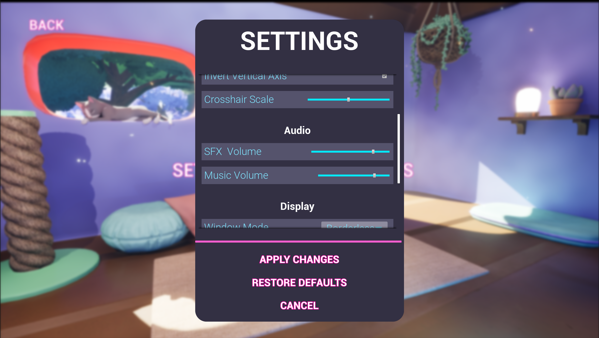
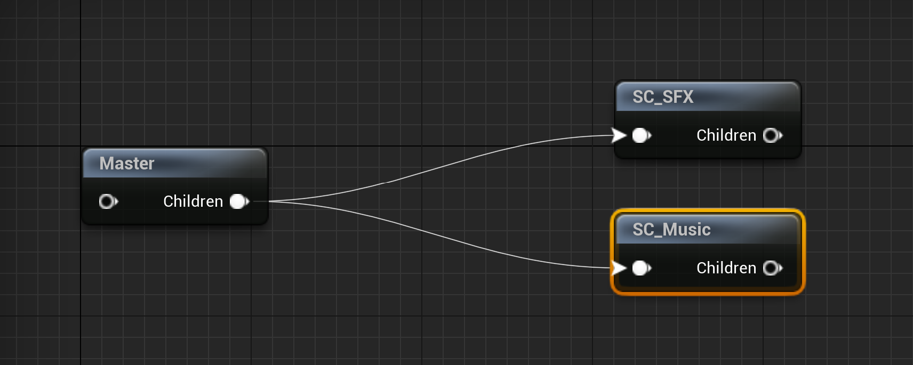
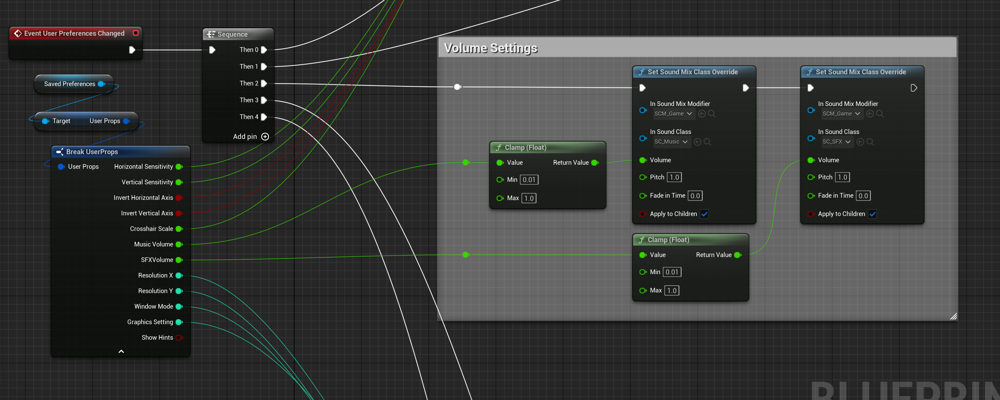
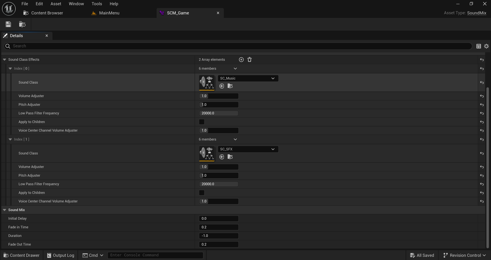
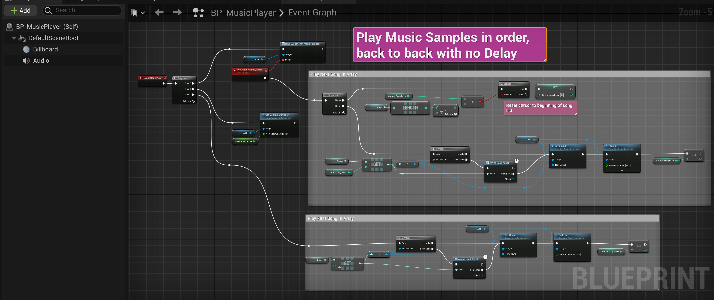
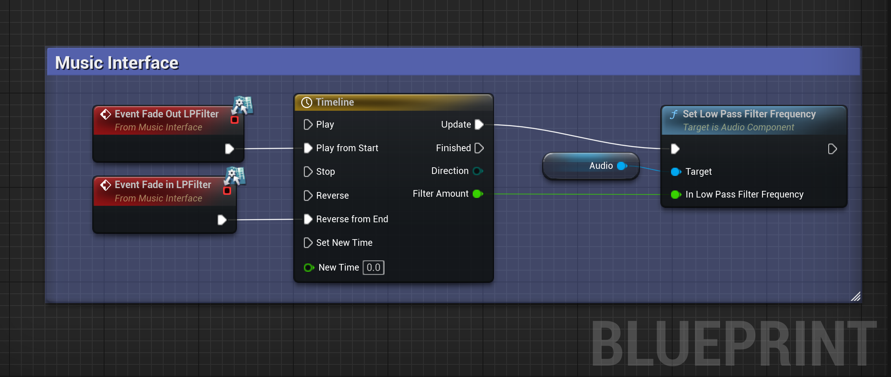
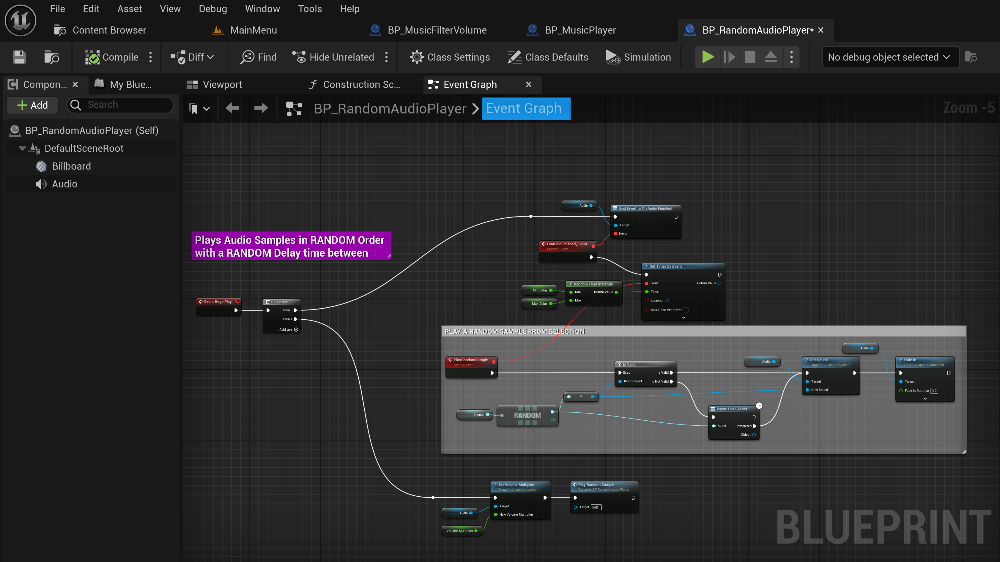
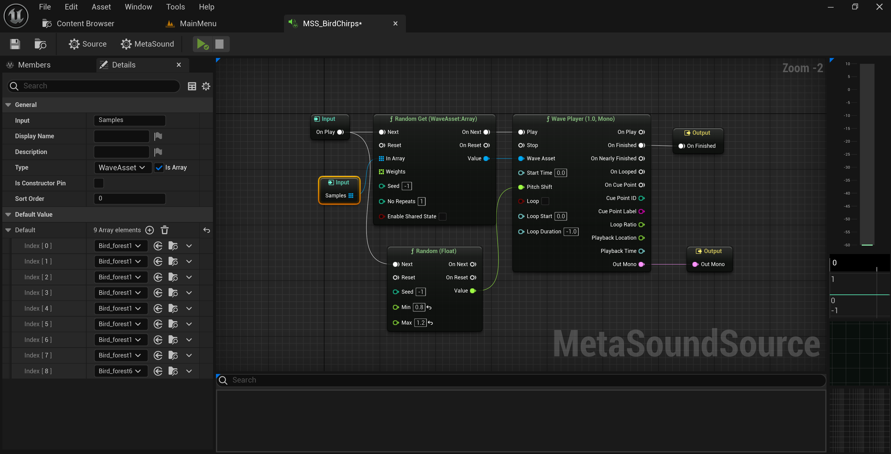

Zappy Cats: Sound Design and Music

Blender, Procreate, UE5 Material Graph
Design Goals...
My overall design goal for Zappy Cats was to create a game that looked and sounded intentional, so I chose a stylized look instead of going for realism. Visually this meant low to mid-poly assets, simple elements for VFX, and animations that exagerated real-life behavior rather than being limited to it. I used a consistent color pallete and repeated certain visual elements throughout the levels to make them feel like they came from the same world.
I applied the same measured limitations to the audio and music. My goal was to create songs that pushed the theme of each level while blending well together. I reused instruments and synths, repeated the main melody in new ways, and used the same effects and mixing across the soundtrack. For the sound effects I selected or recorded samples that exagerrated the behavoir they were matched to. A swipe of the cat's paw gets a comical "swish" sound. Bouncing off of spikes gets a silly "boing". Each electric VFX or action has a satisfying, crackly shock sound. The lasers go "pew".
Features...
- Official Soundtrack of 10 songs made with FL Studio
- Full Playable Character SFX, using samples I recorded of my cat for vocalizations, jumping and paw-steps
- Meta Sounds with randomized pitch and volume
- Custom Music Filter Volume can be placed in levels and used to apply a low pass filter to the game's music while inside
- Random Audio Player that can be placed throughout the levels for enhancing ambience
- Music Interface set up so that other music/audio player types can receive filter effects
- Music and Sound Effect volumes can be adjusted independantly in the Settings Menu
Soundtrack...
For the soundtrack I started with the song for Sunset Gorge. This is the home level and is safe, so I wanted the music to reflect it's peaceful hometown vibe. I came up with a main melody for this song and used it throughout the other songs in different ways to build musical continuity.
I took the synths and effects from the first song and carried them through to the others, modifying them as needed to suit the individual songs. This helped keep everything coherent, like using a limited set of paint colors. I used baselines and modulated filters to give them an undercurrent of energy in order to motivate the Player. I wanted them to feel encouraged and inspired as they went through the game's challenges.
I tried to make each song suit the environment of their level, while being replayable enough that the Player wouldn't mind hearing it loop multiple times. For instance, the Lava Caves level, which is dark and dangerous, has a song with an ominous bass, tin bells, and fluttering flutes that make it feel warped and mysterious, much like the heat waves wafting off of the lake of lava or the glowing mushrooms hidden in the caves.
The Sky Ruins level is set high up above the clouds. It's brightly lit and bare, with no safety nets for the daring jumps the traversal requires. It's an obvious challenge that contrasts the more sinister feel of the Lava Caves. To highlight that, I made the song feel bright, airy, and vast. Soft bells punctuate the space, while the pads exhale in response. The bassline chugs along sharp and electric to keep the energy upbeat and consistent.
For the Space Diner level I was feeling inspired and made two songs, both sound big and dark, with vibrant moments that stand out like stars. The Pirate Cove song was the most challenging for me. I didn't want to make something that sounded too "tropical island" since it didn't suit the game. I took inspiration from the push and pull of waves, and ended up making something that sounds sort of yearning. It's the kind of feeling I get when I look out at the ocean.
For the Main Menu and Tutorial songs, I took the Sunset Gorge song and reworked it until it suited their slower more relaxed needs. The other two songs, "Main Theme" and "Franklin's Club" were used in the trailers for the game, so I made them faster, catchier and more energetic. This was a fun change of pace from making the level music as I didn't have to worry about making them "loopable".
Sound Design...
I did several things to add sound and ambiance to this game aside from the soundtrack. To start, I wanted to give the Player seperate control over Music and Sound Effect volumes, so I added seperate sliders to the Settings Menu and used my extended Game Instance class to handle the application of their values.
Next I created a Music Player class that could be placed within each level with specified music to play. It can play multiple songs in order and will loop back to the first song when it finishes the set. This way the level never runs out of music no matter how long the Player spends in it.
With the Music Player set up I wanted to add some variation. I created the Music Interface for any class with audio that should be effected by gameplay. I set just the Music Player up to implement this interface but it would be very easy to add other audio elements. A better name would've been "Audio Interface" or something like it, since it doesn't have to be used just for Music.
I created the Music Filter Volume so that I could apply custom filters within an area. This is a simple blueprint actor class that's set up to alert the Game Mode when a Player enters or leaves its trigger volume. The Game Mode then tells any actors implementing the Music Interface to execute their Fade In or Fade Out functions. For this game I used this in buildings to apply a low pass filter to the music, so that it sounded far away. It made the interiors feel more cozy and intimate.
To get more randomization I created the Random Audio Player class, which plays a random selection of sounds at random intervals. It's placed in levels with an attenuation override so that the sounds can be localized to specific areas of the level. I used it mainly to add bird song to forested areas, to make them feel more alive. But it could be used for any type of random sounds you like, such as cars honking or dogs barking. It's a layer on top of more ambient sounds like constant traffic or crowd chatter.


(L) Global Music and Sound Effect volumes can be adjusted seperately in the Settings Menu. (R) Master Sound Class with seperate Music and SFX child Sound Classes. These are specified for every sound in the game so that it knows which ones are which. For instance, every song has the SC_Music for its Sound Class. This is how we can have seperate volumes for music and SFX.


(L) The Game Instance listens for the "User Preferences Changed" event which occurs any time the Player saves a change made in the Settings Menu. Here we can see how it applies the Music and Sound Effect volumes. (R) I made a custom Sound Mix Class which specifies the two Sound Classes for Music and SFX, so that we can apply effects as desired. This Sound Mix Class is used when applying the volumes in the Game Instance.


(L) The Music Player class plays a set of songs in order then cycles back to the first song to start again. (R) The Music Player class implements the Music Interface functions to fade in and fade out a low pass filter.


(L) The Random Audio Player can be placed in a level and plays a random sound from a set at a random interval. I used it for playing bird song in some levels to enhance the ambiance. It can use any child class of Sound Base, including Sound Cues and Meta Sounds. (R) A Meta Sound set up to play different bird songs with randomized pitch.
Retrospective...
Game audio is really important. One of my favorite games growing up was pretty challenging, but the music was so good it kept me playing through the frustration of repeated "Game Over" screens. While the music shouldn't be a substitute for poor level design (not that this game had bad levels), it can't be understated how important it is for engaging players and enhancing the experience.
I hope my soundtrack is at least half as good as that game's. One player review said "the music slaps" so I have to believe it's at least decent. That said, there's always room for improvement!
One thing I really want to do for next time is to implement a dynamic music system, where the level music adjusts to the Player's actions and the relative action level of the game. It would mean making music differently, in seperate layers instead of a packaged song, but I think it would enhance the overall feel, and make the Player feel more involved in the world.
Additionally, I'm sort of kicking myself about the Music Filter Volume. It would've been a lot cooler to have each volume specify the filter or effect type it should apply, and use a data-driven approach to apply those effects to the audio. That way we could have more than just a low pass filter. An obvious application would be to adjust the reverb depending on the area.
Most of that is out of scope for this game, so I'm not really upset about not getting to it. I acheived my design goals of an intentional, consistent style, and most importantly delivered a finished product. There's so much to do when making a game, even just in the realm of audio, but I think it's all worth it to make something that feels alive and complete.